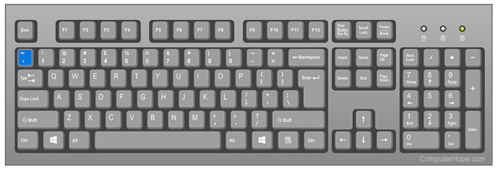

تیلده (~) علامتی جهت اعراب گذاری است که می تواند تلفظ خاصی را برای حرفی که به آن متصل است نشان دهد، یا به عنوان یک کاراکتر فاصله دار مورد استفاده قرار گیرد. در لغت شناسی (موضوعی درون زبان شناسی) از تیلد در لغت نامه ها برای نشان دادن حذف یک کلمه ورودی استفاده می شود. به طور غیررسمی می توان از این نماد به معنای «تقریباً» استفاده کرد. می توان از آن به عنوانsquiggle- خط کوتاه و مارپیچ یا قوس دار (curlicue هم میگویند)نیز استفاده کرد.
مدک در بالای برخی از حروف الفبای لاتین قرار میگیرد و صدای آن حروف را غُنهای (تودماغی) میکند. مدک در زبانهایی مانند پرتغالی، اسپانیایی، استونیایی و ویتنامی کاربرد دارد. در فارسی این نویسه به جای واژههای اصلی (در فرهنگها به جای مدخل) برای پرهیز از تکرار به کار میرود.[۱] برای نمونه: حُسْن [ع] (ا - مص) ۱- زیبایی... ترکیباتِ اسمی ~ اخلاق = نیکخویی... ~ اخلاق = حسن اخلاق
در ریاضیات از tilde برای نشان دادن تقریبی استفاده می شود. همانطور که در "~ $ 31،000،000" "حدود سی و یک میلیون دلار خوانده می شود. به عنوان سرنخ گفتار در زبان های دیگر به تصویب رسید. یک نماد (∼) نشان دهنده هم ارزی یا شباهت بین دو مقدار است. در آمار، از آن برای نشان دادن اینکه یک متغیر توزیع (از) چیزی دارد، استفاده می شود. x∼N(0,1) به این معنی که x به طور معمول توزیع می شود، با میانگین ۰ و واریانس ۱.
در عبارات منظم می توان از تیلد برای تطبیق الگو استفاده کرد. پرونده ای که با یک تیلد یا یک تیلد و علامت دلار شروع می شود (مانند، ~$example.doc) یک پرونده موقت است. در زبان های برنامه نویسی C ، ~ نشان دهنده کمی عاقلانه نیست. رسیدن به دایرکتوری خانه در یک کامپیوتر لینوکس (به عنوان مانند ، سی دی ~).
کلید تیلد روی صفحه کلید کجاست؟
در زیر یک نمای کلی از صفحه کلید کامپیوتر با کلید tilde برجسته به رنگ آبی است.

طریقه ایجاد آن در کامپیوتر:
برای ایجاد آن کلید شیفت را گرفته و علامت تیلد را فشار دهید و یا با استفاده از کلیدآلت+126 نیز می توانید آن را چاپ کنید.
تیلد برای چه چیزی در یک کامپیوتر استفاده می شود؟
1-در زبان هایی مانند اسپانیایی و پرتغالی، تیلده یک علامت دیاکریتی بر روی حروفی مانند 'ñ' و 'ã' است که نشان دهنده تلفظ متناوب یک همسو یا واکه است.
کوتاه کردن نام فایل های طولانی در مایکروسافت ویندوز 95 بالا. به عنوان مثال، تغییر دایرکتوری "پرونده های برنامه" به دایرکتوری "Progra~1" است.
2-کوتاه کردن نام فایل های طولانی در مایکروسافت ویندوز 95 بالا. به عنوان مثال، تغییر دایرکتوری "پرونده های برنامه" به دایرکتوری "Progra~1" است.
3-در عبارات منظم می توان از تیلد برای تطبیق الگو استفاده کرد.
4-پرونده ای که با یک تیلد یا یک تیلد و علامت دلار شروع می شود (مانند، ~$example.doc) یک پرونده موقت است.
5-در زبان های برنامه نویسی C ، ~ نشان دهنده کمی عاقلانه نیست.
6-رسیدن به به دایرکتوری خانه در یک کامپیوتر لینوکس (به عنوان مانند ، سی دی ~).
7-دسترسی به کنسول در برنامه ها و بازی هایی مانند Quake.
8-در ریاضیات ، ~ نشان دهنده یک عدد تقریبی است.
چگونه می توان علامت تیلد را در بالای یک کاراکتر آورد؟
با استفاده از کاراکتر مپ و یا استفاده از insert special character می توان این کار را انجام داد.
نماد مشابهی که نشان دهنده نفی است.